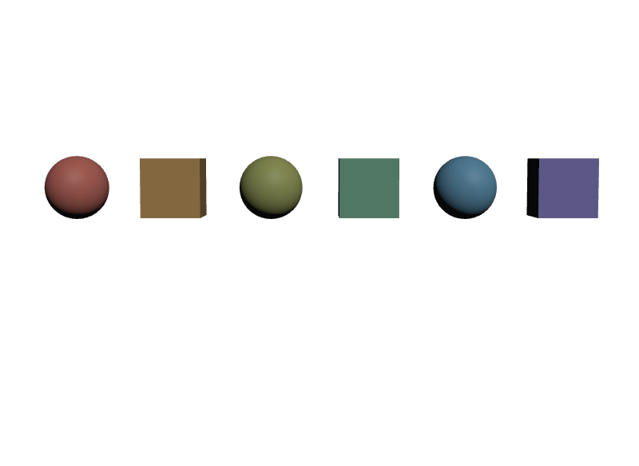

Primvarの個数がpositionsと合わない
varyingなら、値の個数はpositionsの要素数と同じでなければなりません。1個でも足りないと、色が付かないか、意図しない体に付きます。
STEP 92 · POINT INSTANCE REFINEMENT
Primが無くても、配列とidで個体を扱えます
今日これだけ
公式情報に基づく説明
STEP 91で見たとおり、PointInstancerが置いた1体1体はPrimではありません。Pathを持たないので、overで名指しできず、STEP 89のHierarchical Refinementも使えません。
代わりに、PointInstancer自身が持つ配列が個体差の受け皿になります。positionsが1体ごとの位置であるのと同じ考え方で、色や大きさも配列で1体ずつ与えます。手段は3つあります。
1つ目はPrimvarを配る方法です。2つ目はPrototypeを増やしてprotoIndicesで振り分ける方法。3つ目がPromotionで、特定の1体だけを通常のPrimへ引き上げます。
1. Primvarを配る
PointInstancerへPrimvarを書くとき、1体ごとに値を変えたいならinterpolationにvarying（またはvertex）を指定します。STEP 28で見たMeshのvaryingが「Pointごとに1個」だったのと同じで、PointInstancerではインスタンス1体につき1個になります。値の個数はpositionsの要素数と一致させます。
def PointInstancer "Scatter"
{
rel prototypes = [
</World/Scatter/Prototypes/Ball>,
</World/Scatter/Prototypes/Box>,
]
int[] protoIndices = [0, 1, 0, 1, 0, 1]
int64[] ids = [0, 1, 2, 3, 4, 5]
point3f[] positions = [
(-2.5, 0, 0), (-1.5, 0, 0), (-0.5, 0, 0),
(0.5, 0, 0), (1.5, 0, 0), (2.5, 0, 0),
]
# 1体につき1個。Point Instance へ値を配るときは varying を使う
color3f[] primvars:displayColor = [
(0.85, 0.25, 0.2), (0.75, 0.45, 0.15), (0.55, 0.6, 0.2),
(0.25, 0.6, 0.4), (0.2, 0.5, 0.75), (0.35, 0.3, 0.8),
] (
interpolation = "varying"
)
}2. Prototypeを増やす
Prototypeを増やすには3つを揃えます。1つ目は新しい形のPrim階層を定義すること、2つ目はそれをprototypesのRelationshipへ足すこと、3つ目はprotoIndicesを更新して、どの体がどれを使うかを指定することです。上の例では[0, 1, 0, 1, 0, 1]なので、球と立方体が交互に並びます。
ここで増えるものと増えないものを分けて考えます。Instanceを何体置いてもPrimは増えません。1000体でも配列の要素が増えるだけです。一方で、Prototypeの種類を増やした分は、その形のPrim階層が実際に増えます。種類が10あれば10種類分の構造を持つことになります。
つまり「体数に対しては軽いが、種類数に対しては軽くない」という性質です。同じ形を大量に置くことに向いていて、1体ずつ違う形にしたい用途には向きません。

protoIndicesで交互に、色はvaryingのPrimvarで1体ずつ変えています。PrimはScatterと2つのPrototypeだけです。examples/lesson-40/point-refine.usda / ソースからビルドしたOpenUSD v26.08のusdrecord --disableCameraLight（Hydra Storm・Metal）/ macOS 26.5.2・Apple M43. Promotion
「この1本の木だけ枝を折りたい」のように、配列では表せない編集をしたいことがあります。そのときはPromotionを使います。対象の1体をPointInstancerからprune（刈り取り）し、同じ位置に通常のPrimを置き直します。
pruneにはDeactivateId()を使います。これはinactiveIdsというPrim Metadataを書きます。配列から要素を削除するのではない点が大事で、削除しないので他の体の番号がずれません。
from pxr import Gf, Usd, UsdGeom
instancer = UsdGeom.PointInstancer.Get(stage, "/World/Scatter")
positions = instancer.GetPositionsAttr().Get()
# id 2 の体を prune する
instancer.DeactivateId(2)
print("inactiveIds :", instancer.GetPrim().GetMetadata("inactiveIds"))
print("ComputeMask :", list(instancer.ComputeMaskAtTime(Usd.TimeCode.Default())))
# 同じ位置に、通常のPrimとして置き直す
promoted = UsdGeom.Xform.Define(stage, "/World/Promoted")
promoted.GetPrim().GetReferences().AddInternalReference(
"/World/Scatter/Prototypes/Ball")
promoted.AddTranslateOp().Set(Gf.Vec3d(*positions[2]))
print("引き上げ先 :", promoted.GetPrim().GetPath())inactiveIds : SdfInt64ListOp(Explicit Items: [2])
ComputeMask : [True, True, False, True, True, True]
引き上げ先 : /World/PromotedComputeMaskAtTimeの3番目だけがFalseになりました。これが「id 2 は描かない」という意味です。そして/World/Promotedは普通のPrimなので、overでも変換でもMaterial Bindingでも、何でも書けます。
positions[2]をそのまま渡す書き方は、上の例のようにPointInstancerに位置しか与えていない場合にだけ正しくなります。実際には1体ごとにorientationsやscalesを持てますし、Prototypeのroot自身が変換を持っていることも、PointInstancer自体が動いていることもあります。それらを取りこぼすと、引き上げた1体だけ位置や向きがずれます。
取りこぼさないためのAPIがComputeInstanceTransformsAtTime()です。1体ごとの変換を行列の配列で返します。
from pxr import Gf, Usd, UsdGeom
instancer = UsdGeom.PointInstancer.Get(stage, "/World/Scatter")
time = Usd.TimeCode.Default()
# 1体ごとの変換をまとめて求める。positions だけでなく
# orientations・scales・Prototype rootの変換までまとまっている
transforms = instancer.ComputeInstanceTransformsAtTime(time, time)
# これは PointInstancer の「ローカル空間」での変換なので、
# PointInstancer 自身の変換を掛けて world にする
to_world = UsdGeom.Xformable(instancer).ComputeLocalToWorldTransform(time)
world = transforms[2] * to_world
promoted = UsdGeom.Xform.Define(stage, "/World/Promoted")
promoted.GetPrim().GetReferences().AddInternalReference(
"/World/Scatter/Prototypes/Ball")
UsdGeom.Xformable(promoted).MakeMatrixXform().Set(world)IncludeProtoXform -> translation (1.0, 1.0, 0.0) / scale (2.0, 2.0, 2.0)
ExcludeProtoXform -> translation (1.0, 0.0, 0.0) / scale (2.0, 2.0, 2.0)
PointInstancer の local-to-world : (0.0, 3.0, 0.0)
両者を掛けた world 位置 : (1.0, 4.0, 0.0)この例は、positionsが(1, 0, 0)、scalesが(2, 2, 2)、Prototype rootが(0, 0.5, 0)だけ動いていて、PointInstancer自身も(0, 3, 0)にある、という状態です。positionsだけを写すと(1, 0, 0)になりますが、正しい位置は(1, 4, 0)です。
読み取れることが2つあります。1つ目は、既定のIncludeProtoXformがPrototype root自身の変換を含めることです（yが0.5×2で1.0になっています）。含めたくないときはExcludeProtoXformを渡します。2つ目は、返ってくる行列がPointInstancerのローカル空間だということです。world空間の位置が要るなら、ComputeLocalToWorldTransform()を掛けます。
USDAでは、inactiveIdsはPrimの丸括弧の中、つまりMetadataの位置に現れます。
def PointInstancer "Scatter" (
append inactiveIds = [2]
)
{
int64[] ids = [0, 1, 2, 3, 4, 5]
}使い分け
体を消す指定は2つあり、名前が似ていますが役割が違います。この違いはPromotionの正しさに直結します。
inactiveIds | invisibleIds | |
|---|---|---|
| 正体 | Prim Metadata（SdfInt64ListOp） | Attribute（int64[]） |
| 書き方 | DeactivateId(id) | CreateInvisibleIdsAttr([...]) |
| 時間で変えられるか | いいえ。Metadataなので Time Sample を持てない | はい。Time Sample を書ける |
| 意味 | その体を構成から刈り取る（prune） | その時刻に描かないだけ |
| 用途 | Promotion。恒久的に1体を取り除く | 時間で現れたり消えたりする表現 |
どちらも最終的にはComputeMaskAtTime()に反映されるので、実際に描かれるかどうかを確かめるときはこれを見ます。
USDA → Python mapping
USDA
def PointInstancer "Scatter"↓Python
UsdGeom.PointInstancer.Define(stage, "/World/Scatter")USDA
rel prototypes = [<.../Ball>, <.../Box>]↓Python
instancer.CreatePrototypesRel().SetTargets([...])USDA
int[] protoIndices = [0, 1, 0, 1, 0, 1]↓Python
instancer.CreateProtoIndicesAttr(Vt.IntArray([0, 1, 0, 1, 0, 1]))USDA
color3f[] primvars:displayColor = [...] ( interpolation = "varying" )↓Python
UsdGeom.PrimvarsAPI(instancer).CreatePrimvar("displayColor", Sdf.ValueTypeNames.Color3fArray, UsdGeom.Tokens.varying)USDA
append inactiveIds = [2]↓Python
instancer.DeactivateId(2)USDA
int64[] invisibleIds = [3]↓Python
instancer.CreateInvisibleIdsAttr(Vt.Int64Array([3]))Diagram
interpolation = "varying"で1体につき1個。色・大きさなど。いちばん軽いprototypesへ足し、protoIndicesを更新する。種類の分だけ構造が増えるDeactivateId()でpruneし、同じ位置へ通常のPrimを置く。自由に編集できるが共有から外れるよくある間違い
varyingなら、値の個数はpositionsの要素数と同じでなければなりません。1個でも足りないと、色が付かないか、意図しない体に付きます。
constantはPointInstancer全体で1個です。1体ずつ変えたいならvarying（またはvertex）です。
positionsやprotoIndicesから要素を消すと、それ以降の体のindexがすべてずれます。他の配列との対応も崩れます。恒久的に取り除きたいときはDeactivateId()、時間で消したいときはinvisibleIdsを使います。
見た目は同じになりますが、invisibleIdsは時間で変わる表示・非表示のための指定です。Promotionのように恒久的に取り除く場合はDeactivateId()（inactiveIds）を使います。下流のツールは両者を別のものとして扱うため、意図が伝わらなくなります。
idsを書いていない場合、番号は配列のindexとして扱われます。要素を足し引きすると意味が変わってしまうため、個体を名指ししたいならidsを明示します。
invisibleIdsを書かずに通常のPrimを置くと、同じ場所に2つ重なります。見た目ではほとんど分からないので、気付きにくい間違いです。
Glossary
prototypesのどれを使うかを番号で並べた配列。idsで指定するAttribute。Time Sampleを持てるため、時間で現れたり消えたりする表現に使う。SdfInt64ListOpで、Time Sampleは持てない。DeactivateId()が書き込む。inactiveIdsへ加えるPython API。Promotionの前段で使う。True／Falseの並びで返すPython API。DeactivateId()でpruneし、ComputeInstanceTransformsAtTime()で求めた変換を持つ通常のPrimを同じ場所へ置き直して、個別に編集できるようにすること。positions・orientations・scalesと、既定ではPrototype root自身の変換もまとめて含む。返る行列はPointInstancerのローカル空間。Official references
確認日: